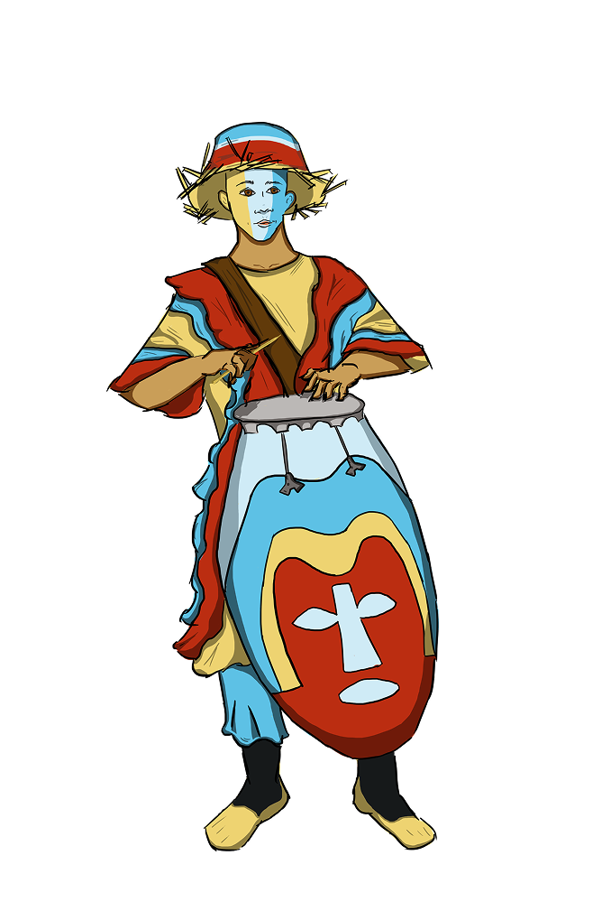
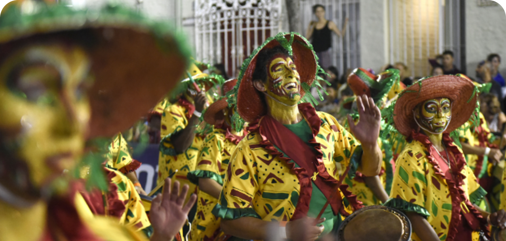
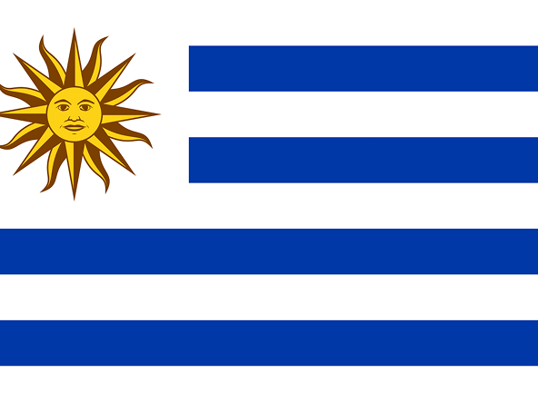
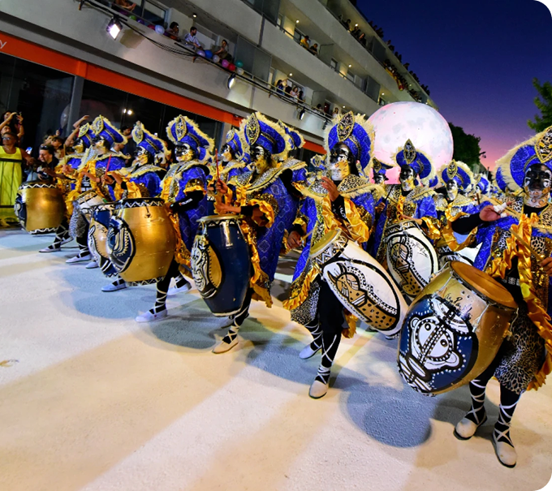

URUGUAI
Llamadas de San Baltasar
Tamborileros

As Llamadas de San Baltasar são uma manifestação afro-uruguaia realizada principalmente em 6 de janeiro, nos bairros Sur e Palermo de Montevidéu, marcada pelo desfile de comparsas de candombe ao som dos tambores. Essa celebração tem origem nas práticas culturais da população afrodescendente desde o período colonial, quando os encontros com tambores eram formas de resistência e preservação cultural.
Os Tamborileros são os músicos responsáveis por tocar os tambores de candombe durante as Llamadas de San Baltasar, no Uruguai. Caminhando pelas ruas em cortejo, eles executam ritmos transmitidos entre gerações, mantendo viva uma das mais importantes heranças afro-uruguaias. Sua música conduz a dança, marca o ritmo da celebração e fortalece a memória das comunidades negras que transformaram o candombe em símbolo de resistência cultural e identidade coletiva.
As vestimentas dos tamborileros e participantes das Llamadas de San Baltasar estão diretamente ligadas à história da população afro-uruguaia escravizada e liberta. Durante o período colonial, os africanos e seus descendentes só podiam se reunir em determinadas datas, especialmente no Dia de Reis (6 de janeiro), quando recebiam permissão para tocar, dançar e celebrar suas tradições.
Esses encontros deram origem ao candombe, uma expressão cultural de origem africana que combina música, dança e espiritualidade. Com o tempo, as Llamadas de San Baltasar passaram a ser uma celebração pública de identidade afrodescendente, mantendo a memória da escravidão e da resistência cultural através da música e da presença corporal nas ruas.
Quando fazem parte de comparsas organizadas, os tamborileros podem usar: camisetas ou trajes padronizados da escola de candombe cores que identificam o grupo elementos decorativos simples (lenços, faixas, detalhes afro-carnavalescos) Isso ajuda a identificar cada comparsa durante o desfile na Isla de Flores, onde ocorre o cortejo.

O desfile se passa em Montevidéu, no dia 6 de janeiro. É uma homenagem ao Baltazar, santo rei do candomblé, que está relacionada às festas dos escravos libertos na época da independência colonial. É uma tradição caracterizada pelo acompanhamento do som de vários tambores, junto com dançarinos que representam figuras importantes da religião. O desfile é longo e leva mais de 6 mil pessoas à rua. A festa expressa as dificuldades que os escravos passaram, como os passos curtos e rítmicos da banda de tambores, que simulam escravos andando acorrentados.

Pequeno em território, mas rico em tradições culturais, o Uruguai possui forte influência afro-uruguaia, indígena e europeia. O espanhol é a língua oficial e a memória dos processos migratórios e das lutas sociais está presente em diversas manifestações culturais.
As Llamadas de San Baltazar são uma das mais importantes expressões dessa herança afrodescendente. Ao som dos tambores do candombe, a celebração recorda as experiências da população negra durante o período colonial e transforma a memória da escravidão em afirmação cultural, resistência e pertencimento.
